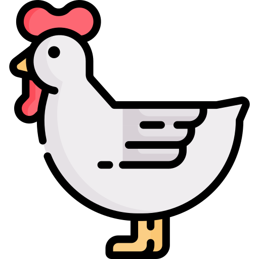

- Huk wasi - una casa
- huk wallpa - una gallina
- huk mishi - un gato
- ishkay challwa - dos pescados
- ishkay akaśh - dos cuyes
- ishkay akśhu - dos papas
- kimsa waaka - tres vacas
- kimsa inchu - tres picaflores
- tawa chuspi - cuatro moscas
- pichqa allqu - cinco perros
- suqta lumi - seis piedras
- qanćhis wishla - siete cucharones
- pusaq mućhka
- isqun aśhnu
- ćhunka utulu - diez gallos
A partir del número 11 en adelante se usa el sufijo posesor yuq / niyuq, yuq en caso la palabra culmine en vocal, y niyuq cuando la palabra culmine en consonante.
11. ćhunka hukniyuq
12. ćhunka ishkayniyuq
13. ćhunka kimsayuq
14. ćhunka tawayuq
15. ćhunka pichqayuq
16. ćhunka suqtayuq
17. ćhunka qanćhishniyuq
18. ćhunka pusaqniyuq
19. ćhunka isqunniyuq
21 - ishkay ćhunka hukniyuq
22 - ishkay ćhunka ishkayniyuq
23 - ishkay ćhunka kimsayuq
24 - ishkay ćhunka tawayuq
25 - ishkay ćhunka pichqayuq
26 - ishkay ćhunka suqtayuq
27 - ishkay ćhunka qanćhishniyuq
28 - ishkay ćhunka pusaqniyuq
29 - ishkay ćhunka isqunniyuq
31 - kimsa ćhunka hukniyuq
32 - kimsa ćhunka ishkayniyuq
33 - kimsa ćhunka kimsayuq
34 - kimsa ćhunka tawayuq
35 - kimsa ćhunka pichqayuq
36 - kimsa ćhunka suqtayuq
37 - kimsa ćhunka qanćhishniyuq
38 - kimsa ćhunka pusaqniyuq
39 - kimsa ćhunka isqunniyuq
- 41 - tawa ćhunka hukniyuq
- 42 - tawa ćhunka ishkayniyuq
- 50. pichqa ćhunka
- 60. suqta ćhunka
- 70. qanćhish ćhunka
- 80. pusaq ćhunka
- 90. isqun ćhunka
101 - paćhak hukniyuq
102 - paćhak ishkayniyuq
103 - paćhak kimsayuq
104 - paćhak tawayuq
110 - paćhak ćhunka
111 - paćhak ćhunka hukniyuq
121 - paćhak ishkay ćhunka hukniyuq
122 - paćhak ishkay ćhunka ishkayniyuq
179 - paćhak qanćhish ćhunka isqunniyuq
379 - kimsa paćhak qanćhish ćhunka isqunniyuq
1001 - walanka hukniyuq
2021 - ishkay walanka ishkay ćhunka hukniyuq
2022 - ishkay walanka ishkay ćhunka ishkayniyuq
15,321 - ćhunka pichqa walanka kimsa paćhak ishkay ćhunka hukniyuq
25,321 – ishkay ćhunka pichqa walanka kimsa paćhak ishkay ćhunka hukniyuq
956,321 – isqun paćhak pichqa ćhunka suqta walanka kimsa paćhak ishkay ćhunka hukniyuq
- 1,000,000. Hunu - un millón
Los numerales puede entrar en construcción con las demás clases de nombres dentro de una frase nominal; así por ejemplo:
ishkay chaka - dos puentes
tawa chuklla - cuatro chozas
y adviértase que el núcleo (es decir el sustantivo) no necesita del sufijo plural (kuna), puesto que la pluralidad está ya indicada instrinsecamente en el numeral; pero cuando entre el numeral y el núcleo se intercala uno o más modificadores es obligatoria dicha marca; por ejemplo:
ishkay mawka chakakuna - dos puentes viejos
tawa chiyap taksha chukllakuna - cuatro chozas muy pequeñasIshkay
3
4
2
Kimsa
1
2
3
Huk
2
1
4
Pusaq
4
5
8
Tawa
1
3
4
Pichqa
3
10
5
Suqta
6
7
8
Isqun
10
9
2
Ćhunka
1
10
8
Qanćhis
5
6
7
¿Haykam - ¿Cuánto es?
3 - kimsam - es tres
9 - isqunmi - es nueve
2 - ishkaymi - es dos
5 - pichqam - es cinco
¿Hayka kuchikunanm kayalkan? - ¿Cuántos cerdos hay?
5 (pichqa) kuchikunam kayalkan - Hay 5 cerdos
¿Hayka allqukunanm kayalkan? - ¿Cuántos perros hay?
4 (tawa) allqukunam kayalkan - Hay 4 perros
¿Hayka mishikunanm kayalkan? - ¿Cuántos gatos hay?
2 (ishkay) mishikunam, ulqu mishi, ćhina mishi kayalkan - Hay 2 gatos, gato macho, gato hembra
¿Hayka wallpakunanm kayalkan? - ¿Cuántos gallinas hay?
6 (suqta) wallpakunam kayalkan - Hay 2 gatos, gato macho, gato hembra